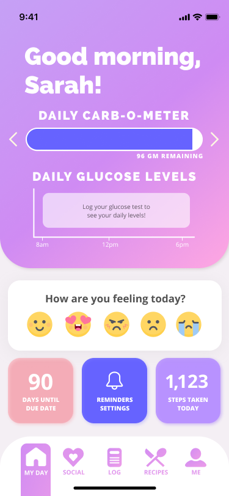
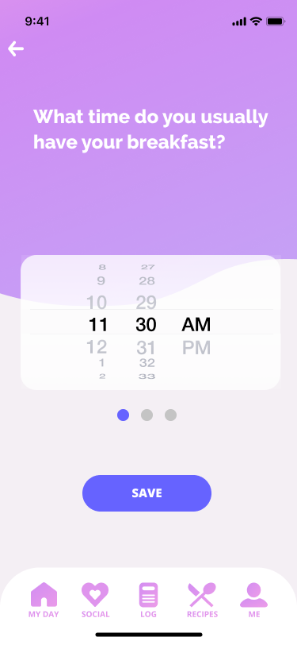
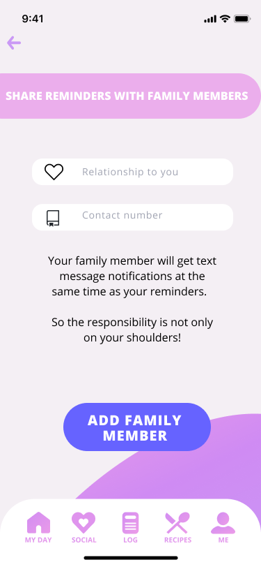
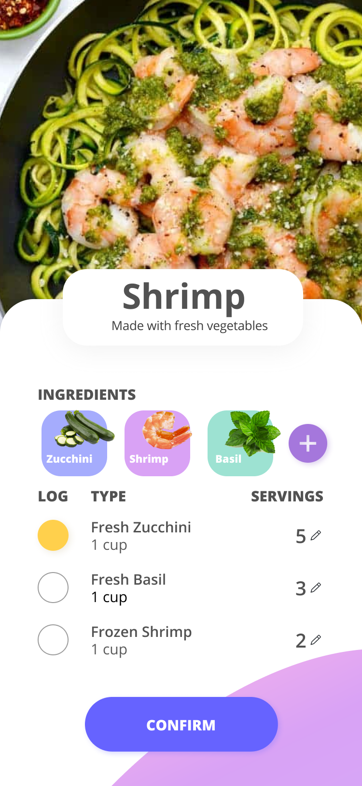
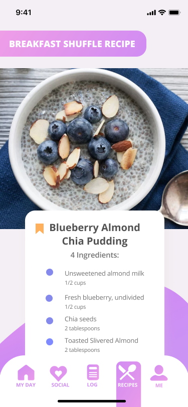
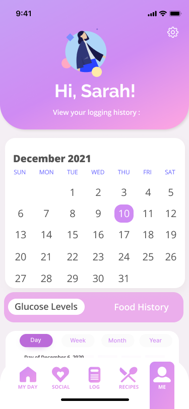

December 2020 / Together with
Stacey Jiang, Murtaza Kerani, Mujgan Ozceylan, and
Ang Xiao, we designed an app in less than 24 hours to help pregnant women with gestational diabetes track their food. Created as part of the UXResult Hackathon 2020. My responsibilities included user research, analysis, and medium-fidelity prototyping, as well as establishing the base design for the high-fidelity prototype.
The
challenge, sponsored by
Benten, asked teams to "design a quick and efficient approach to food logging for pregnant mothers who have gestational diabetes". The medium had to be app-based. We were given some basic info about GDM and what was to be included, but because we were all unfamiliar with GDM, we decided to conduct additional research.
Due to the time and virtual restrictions, we were only able to conduct a majority secondary research, while primary research consisted of an informal questionnaire posted to a GDM-specific Reddit page. From this, we crafted the following problem statement and goal for the application:
Problem: "Women with gestational diabetes are considered to be “high risk” during pregnancy, which creates an added stress on them on top of the hormonal, physical and emotional changes they experience during pregnancy. They feel overwhelmed because Gestational Diabetes requires a strict diet and doing several blood tests a day."
Goal: "Our goal in creating this app is to reduce the stress on pregnant women with gestational diabetes by providing a platform where they can easily track their meals and blood sugar levels. We believe gestational diabetes shouldn’t take away from the joy of their pregnancy."
We then introduced Sarah, our
Persona. Sarah is a kind and fun-loving professor at a local college who is about to become a first-time mother. She has a fairly busy social schedule, grabbing brunch with friends on the weekend or going to lectures between grading papers and teaching classes.
We mapped Sarah's current As-Is Scenario and identified the pain points as the following:
• Find Information
• Log Meal: Having to write down what she's eating, calculating the glucose/carb intake
• Eat
• Check Blood Level: Needs to rest, doesn't always remember to check level
• Log Blood Level: Forgetting where she put her log notebook
We put together five
Needs Statements and then diverged to come up with
Big Ideas which were then plotted on a
Prioritization Grid. We narrowed down the main features to be the following:
• Food recognition camera to log their food (mandatory)
• Food and blood glucose levels log (mandatory)
• Log report export (mandatory)
• Mood check-in
• Visual graphs for daily carbs, blood glucose levels
• Recipe suggestions with dietary restrictions and a randomizer option
• Family feature to connect family who can help remind them to log
We continued the design journey by collaborating on a
Sketch Prototype. Due to time, we had to quickly move on to the
Medium-Fidelity Prototype. I worked on the initial design base for the
High-Fidelity before focusing on the mandatory five-minute presentation while my team polished the rest. A preview of the prototypes can be found below.
Click here to try the full clickable prototype on Figma.
| 
Homepage
After logging in, the user can view their tracked carbohydrates and glucose levels once they've added meals, as well as a mood check-in and other features. |

Log Reminders
Users can set reminders to ensure they're logging their meals into the app. |

Share Reminders
As a backup, users can add family or friends who can help them to remember to add their meals |
| 
Nutrition Info
After taking a photo of their meal, the app will detect the ingredients and feed back the nutrition information. |

Recipe Shuffle
If the user isn't sure what they want to eat, a recipe shuffle will bring up ideas based on meal types (breakfast, dinner, etc.) and within their dietary requirements. |

Logging History
The user can view a history of their tracked meals and health information. |
If we'd had more time, we would have done rounds of
usability tests after the different stages of prototyping. Nevertheless, the feedback from the judges helped a lot. In future iterations, we would consider:
• Polishing the "community" aspect of the app to create a safe space for mothers-to-be to discuss their struggles rather than just another Instagram-esque sharing platform.
• Restructure heavier pages such as the homepage with better mental models and common UX patterns.
• Reconsider the current reminders set-up flow to focus on a more high-level view at the initial stage.
• Finesse the food identification and logging gratification experience.
• Redesign the layout of the recipes panel to show more recipe options.
This was the first hackathon for me and my entire team, so we definitely know to better manage our time in the next one. We received excellent feedback from the hackathon judges, however, and I agree that we could have
focused the app just a bit more. We put too much weight on trying to make it unique when we could have spent that time polishing the main utilities including the food logging function and adding a voice logging function.
This project was also a really good lesson for the importance of usability tests, I do think some of our blunders would have been caught earlier on if we'd had the chance to test it on the ideal user.